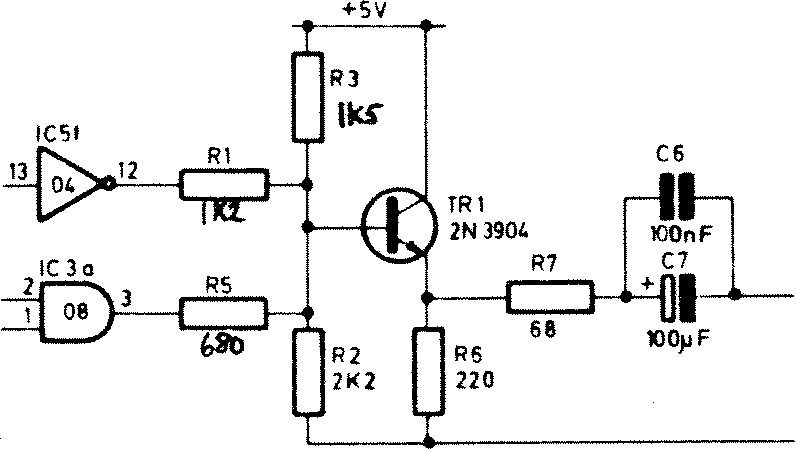
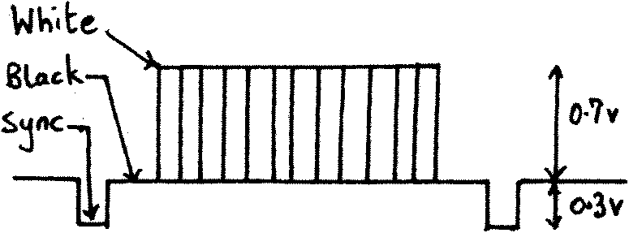

80-Bus News |
November–December 1983 · Volume 2 · Issue 6 |
| Page 44 of 67 |
|---|
1) A few words telling me what to expect (e.g. Naspen file ‰ 1200 baud, or 48tpi Poly-Dos disk). and
2) a stamped addressed label (or envelope) for the return of your media if so required.
So put your fingers to the keyboard and send the results to 80-BUS News.
I was recently doing some work with a video output stage, and, having a reasonable ‘scope to hand as a result, I decided to look at the ouput stage of Gemini IVC. There were two points I wanted to deal with, a) the low level of output ( < standard 1V p-p), and b) ‘The marching sands of time’. (Background interference patterns that are noticeable when using large areas of inverse video).
The IVC output stage is shown in Fig 1. It consists of an emitter
follower driven by the video signal from IC3a (via R5), and the mixed syncs
from IC5f (via R1). The ideal output waveform is shown in Fig 2. This consists
of a three level signal whose peak-to-peak amplitude is 1V (when driving into
a 75 ohm load). The three levels of the signal are white, black, and sync, and

Fig 1
their relative amplitudes are also given
in Fig 2. Assuming a perfect emitter
follower with an output impedance of 75 ohms,
we want to aim for a 2v p-p signal
at the base of the transistor. I started
by selecting arbitary voltage levels of
White=3V, Black=1.6V, Sync=1V. Let us
now consider how the three signals are
generated: For the ‘White’ level the
output of IC3a is high, (dot on), and the
output of IC5f is high (no sync signal).
For the ‘Black’ level we have the output of IC3a low (dot off), and the output
of IC5f is high (no sync signal). Finally for the ‘Sync’ level the outputs of
both IC3a and IC5f are low. Armed with this information it is only a case of
applying Ohm’s Law and Kirchoff’s Law to the circuit…or is it? One problem
is that the high level output voltage from a TTL gate is not very well

Fig 2
defined, and it also has an appreciable
output impedance. With the ICs fitted to
my card the high level seemed to be
around 3V, so, as I just happened to have
picked 3V for my white level, I could
conveniently ignore R1 and R5 and
calculate a suitable value for R3. This
then left me with two unknowns, and two
equations (for the Black level and the
Sync level). The result of the
calculations (followed by a small adjustment after an actual trial) is shown
in Fig 2. (Compare the values against those of the
IVC
circuit diagram). These
values resulted in a reasonable video signal driving out from the card.
One other small change I would recommend, especially if you use inverse video or occasionally have large white areas on your screen, is to short out C7. This should not have any harmful effect, as all monitors I have encountered have their own DC blocking capacitor. (They normally have a 75 ohm terminating resistor, the top-end of which is coupled via a small capacitor, – 10uF, into a high impedance input stage. I note also that the BBC Micro has no
| Page 44 of 67 |
|---|